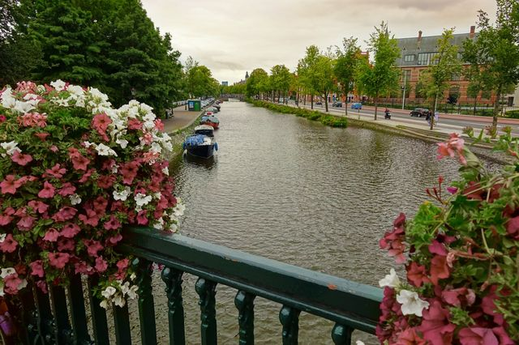
Kanál v Amsterodamu
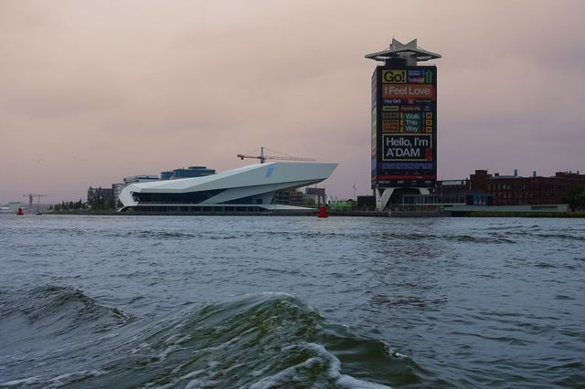
Amsterodam (pobřeží)
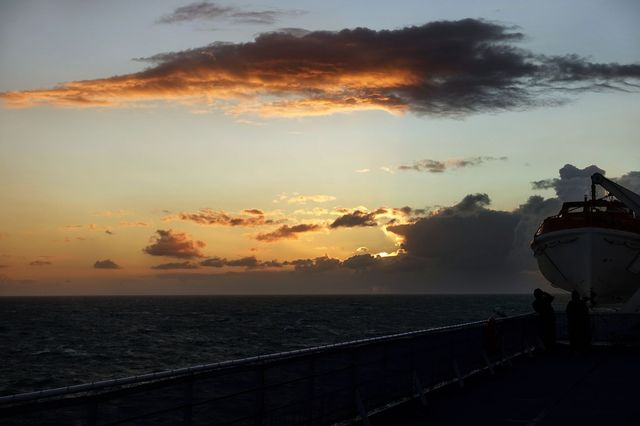
Trajekt do UK
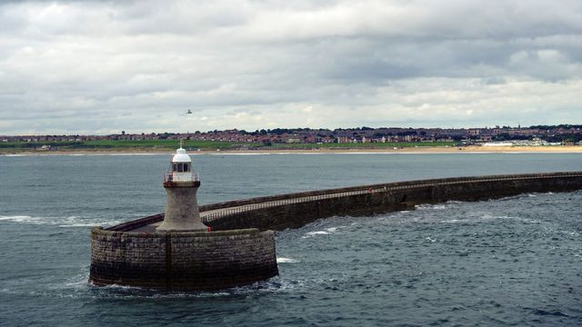
Pobřeží Skotska
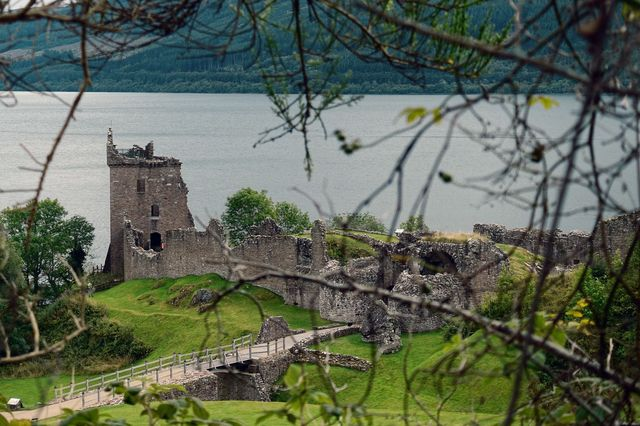
Urquhart Castle
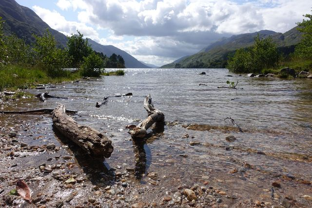
Břeh jezera
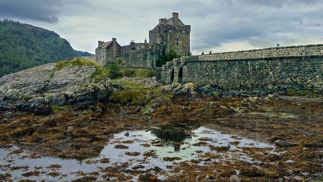
Eilean Donan Castle
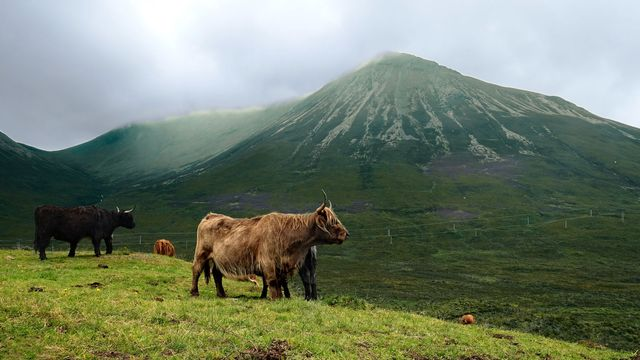
Skotský skot
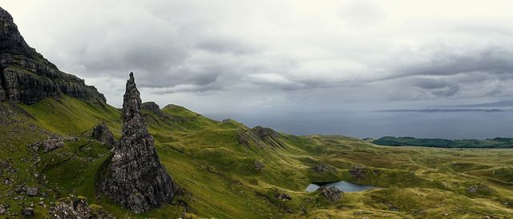
The Old Man of Storr, Skye
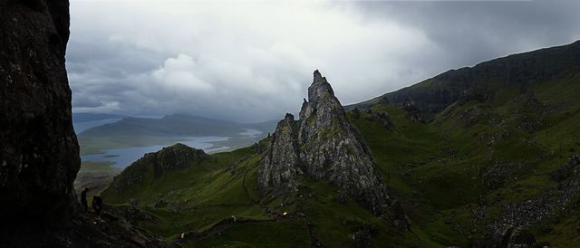
The Old Man of Storr, Skye
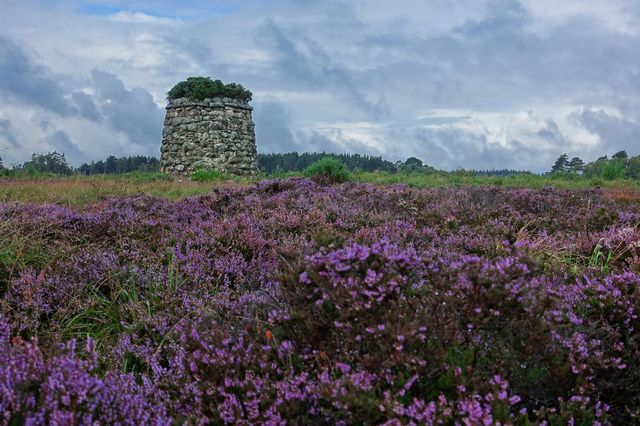
Culloden
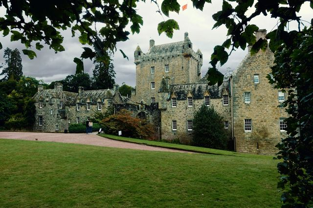
Cawdor Castle
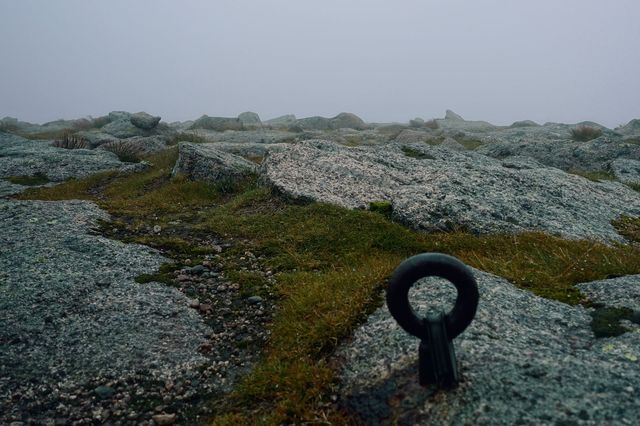
Cairn Gorm
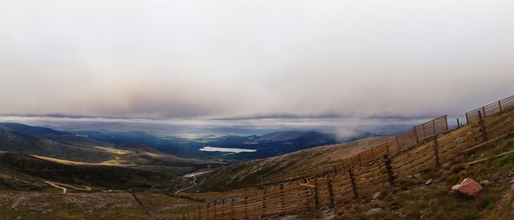
Cairngorms National Park
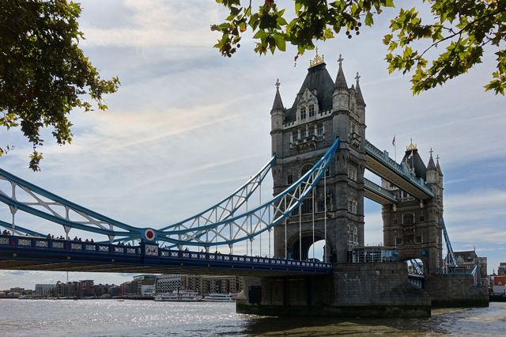
Tower Bridge
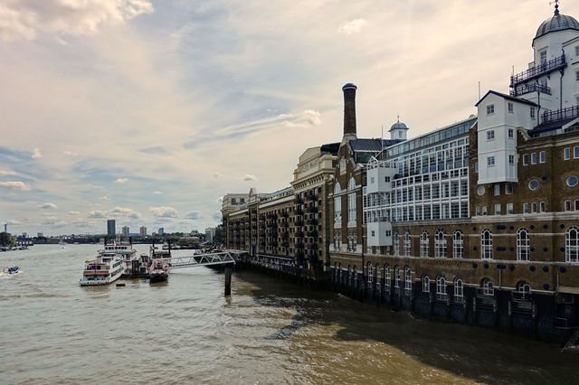
Butler's Wharf
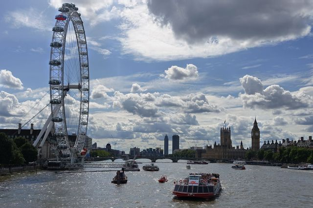
London Eye
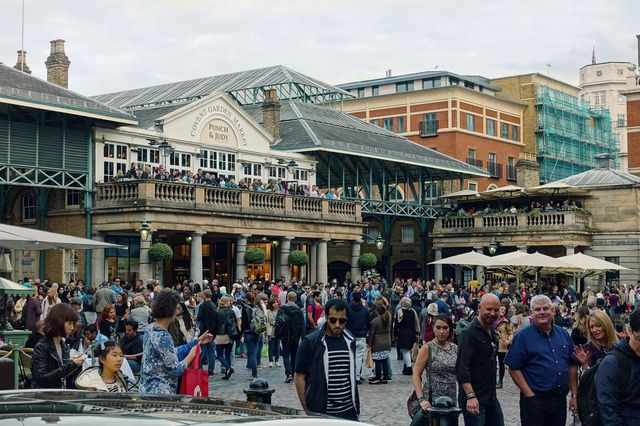
Covent garden market - London
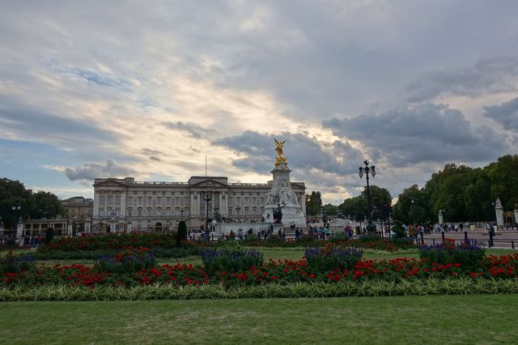
Buckinghamský palác
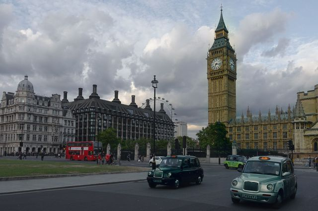
Big Ben London
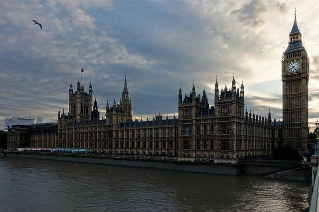
Big Ben London
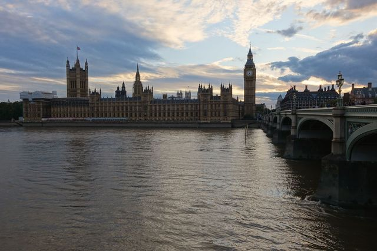
Big Ben London